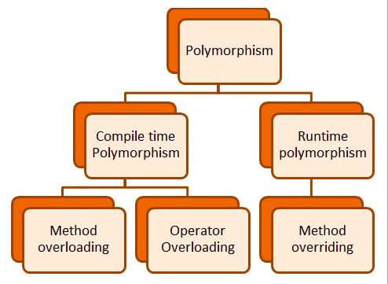

Polymorphism
The word polymorphism means having many forms. In simple words, we can define Java Polymorphism as the ability
of a message to be displayed in more than one form. In this article, we will learn what is polymorphism and it’s
type.
Real-life Illustration of Polymorphism in Java: A person at the same time can have different characteristics.
Like a man at the same time is a father, a husband, and an employee. So the same person possesses different
behaviors in different situations. This is called polymorphism.
What is Polymorphism in Java?
Polymorphism is considered one of the important features of Object-Oriented Programming. Polymorphism allows us
to perform a single action in different ways. In other words, polymorphism allows you to define one interface
and h
